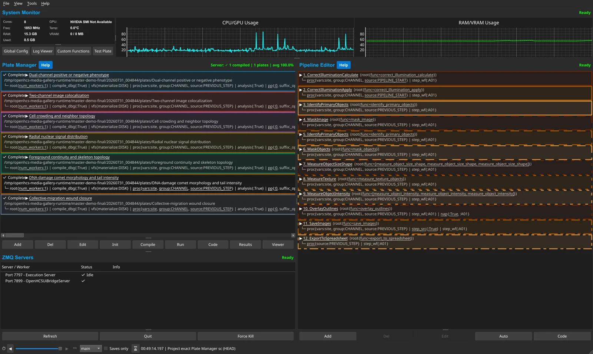
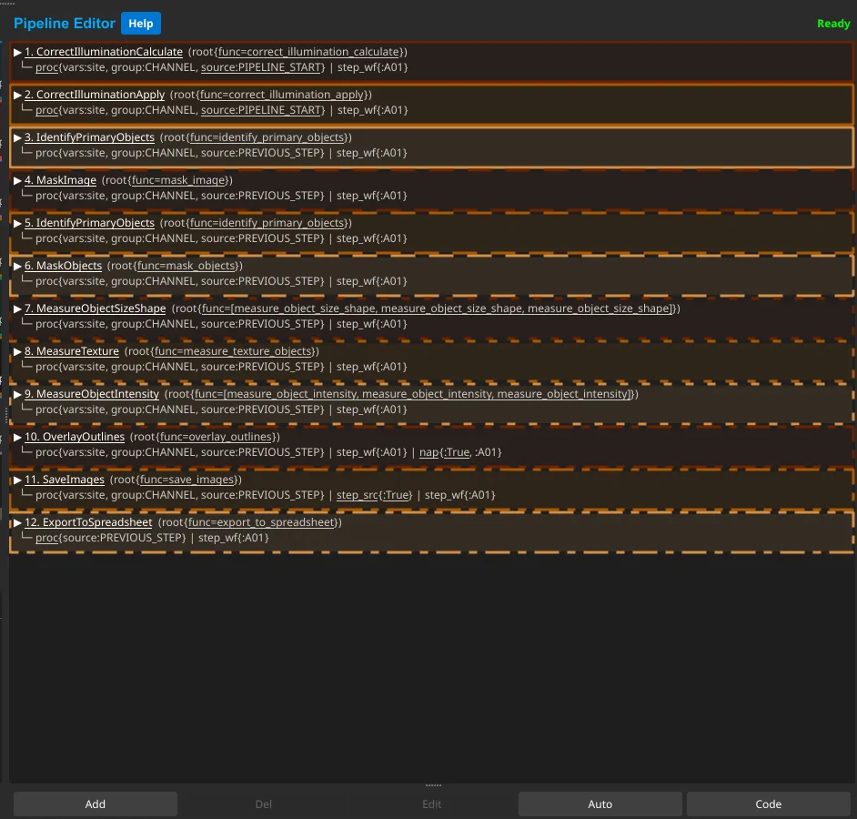
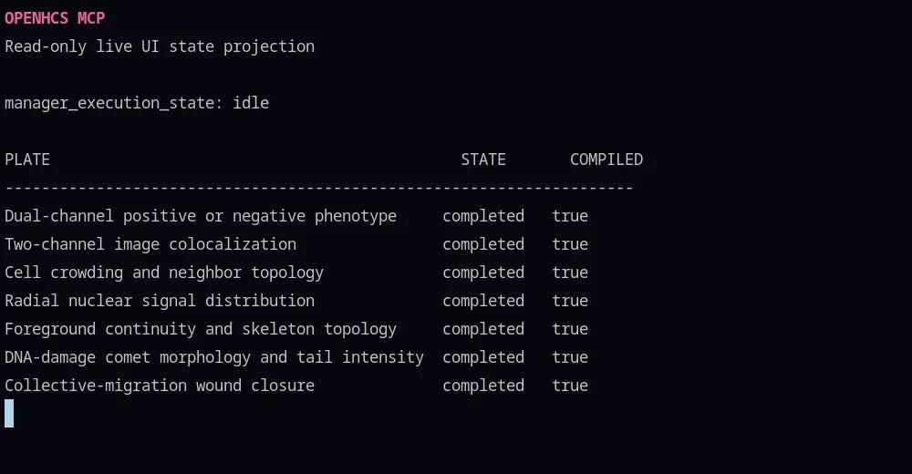
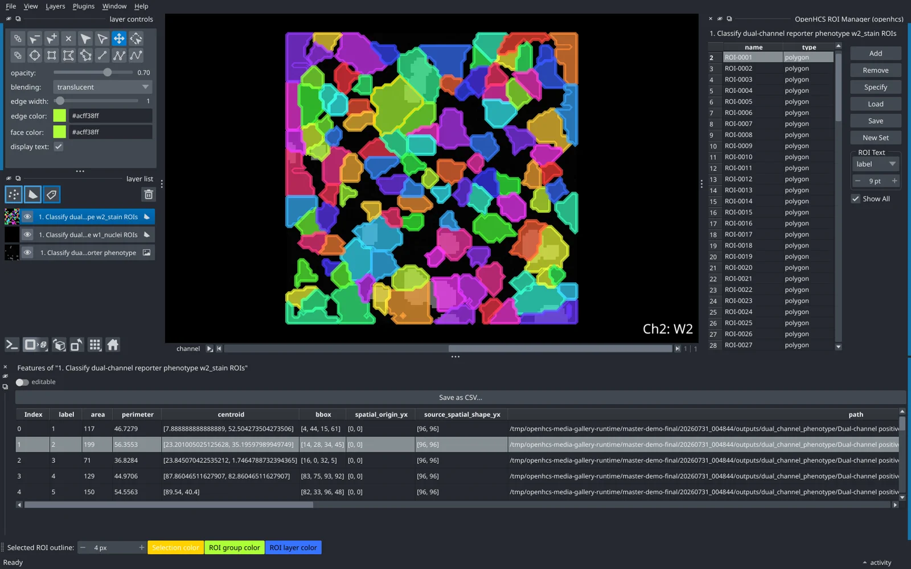
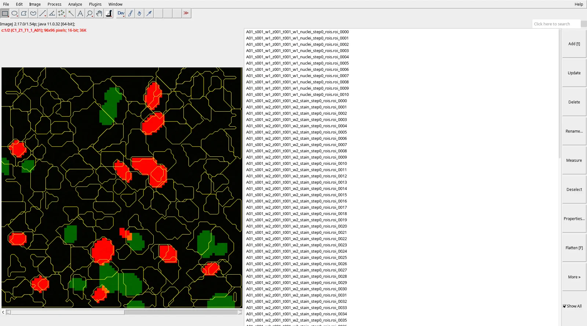

UI and Python round trip
Build visually, edit generated Python, and inspect typed artifacts without translating between pipeline formats.

OpenHCS is a desktop and headless Python platform for loading microscopy
data, defining typed pipelines, running parallel analyses, and retaining
images, ROIs, and measurements as explicit artifacts.
The current OpenHCS beta includes supported CellProfiler
.cppipe import and a local MCP server.
Real OpenHCS sessions across pipeline authoring, execution, and interactive review. Open any still image at full resolution.
Watch the five-minute walkthrough
Five deterministic examples and two imported CellProfiler workflows retain independent state in one session.

The 12-step Comet Assay uses OpenHCS compilation, configuration, viewers, and results.
A pipeline-scope Well Filter propagates to the step and its Napari and Fiji settings; provenance returns to the pipeline owner. Download GIF
A real imported Comet Assay run moves through compilation, execution progress, and completion.
Live measurement rows sit beside Napari; selecting a native ROI updates its linked feature row.

A fresh read-only projection reports the seven completed plates held by the desktop session.

A compiled image and object-label outputs appear as an image and native shapes with selected-feature linkage.

The same compiled OpenHCS step streams to Fiji/ImageJ with image data and native ROI presentation.
Visual edits and generated Python resolve to the same typed configuration, function, and artifact model.
Build visually, edit generated Python, and inspect typed artifacts without translating between pipeline formats.
.cppipe import OpenHCS {{ OPENHCS_VERSION }}Lower supported CellProfiler modules into ordinary OpenHCS declarations; unsupported modules fail explicitly.
Stream images and results to either viewer from the same compiled pipeline.
Decorate ordinary Python functions for CuPy, PyTorch, JAX, TensorFlow, or pyclesperanto. They gain contract validation, UI integration, and automatic memory conversion.
openhcs[gpu]
Read microscopy images and dimensional metadata through the Bio-Formats backend.
 Bio-Formats
{{ OPENHCS_VERSION }}
Bio-Formats
{{ OPENHCS_VERSION }}
openhcs[bioformats]
The mcp extra exposes the typed function registry, pipeline
declarations, results, and supported UI actions through a local stdio
server. The desktop installer can register it with detected supported
clients, including the ChatGPT desktop app and Codex app/CLI/IDE. The
official registry metadata, shared ChatGPT desktop/Codex configuration,
and Claude packaging come from the same release source.
Desktop installers provide the application and one-click local agent connection without a separate Python setup. PyPI supports headless systems and custom environments.
Native installers follow the latest complete GitHub release and may trail the current PyPI package. User-scoped, CPU-only installation with CellProfiler compatibility, local MCP, Napari, and Fiji/Bio-Formats support. Leave the agent option checked to connect ChatGPT desktop, Codex, and detected supported local clients, then restart the clients and ask them to use OpenHCS. ChatGPT web requires a remote HTTPS app or an eligible Secure MCP Tunnel. GPU libraries are not included. Fiji Java components are resolved on first use. Initial assets are not code-signed, and the macOS app is not notarized, so your OS may ask you to confirm trust.
$ python -m pip install "openhcs[gui,viz,bioformats,mcp,cellprofiler-compat]"
$ openhcs


{kind=link}
{kind=link}
{kind=link}
{kind=link}
{kind=link}
{kind=link}
{kind=link}
{kind=link}
{kind=link}